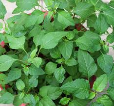
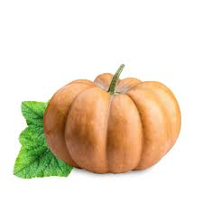
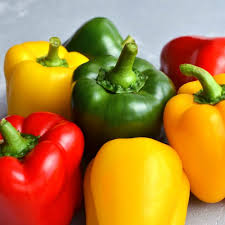

முள்ளங்கி
மண்: வளமிக்க சில்டு மண்
வளர்ச்சி காலம்: 20 முதல் 30 நாட்கள்.

சீனை கீரை
மண்: நல்ல வடிகட்டி மண், தீவிர நேர்காணல் கொண்டது
வளர்ச்சி காலம்: 30 முதல் 45 நாட்கள்.

பூசணி
மண்: தண்ணீர் நீர்த்துப் போகும் மண்
வளர்ச்சி காலம்: 90 முதல் 120 நாட்கள்

குடைமிளகாய்
மண்: சாணம் கலந்த மண்
வளர்ச்சி காலம்: 60 முதல் 90 நாட்கள்

கேரட்
மண்:ஆழமான சாண மண்
வளர்ச்சி காலம்: 60 முதல் 80 நாட்கள்